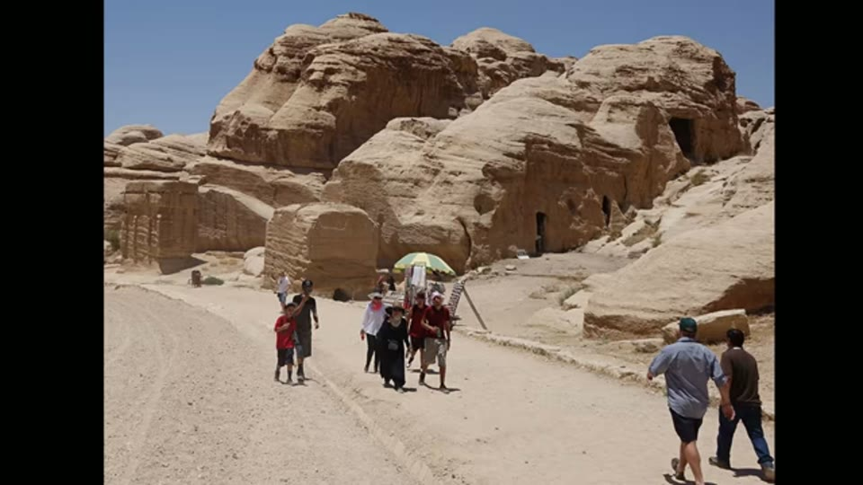
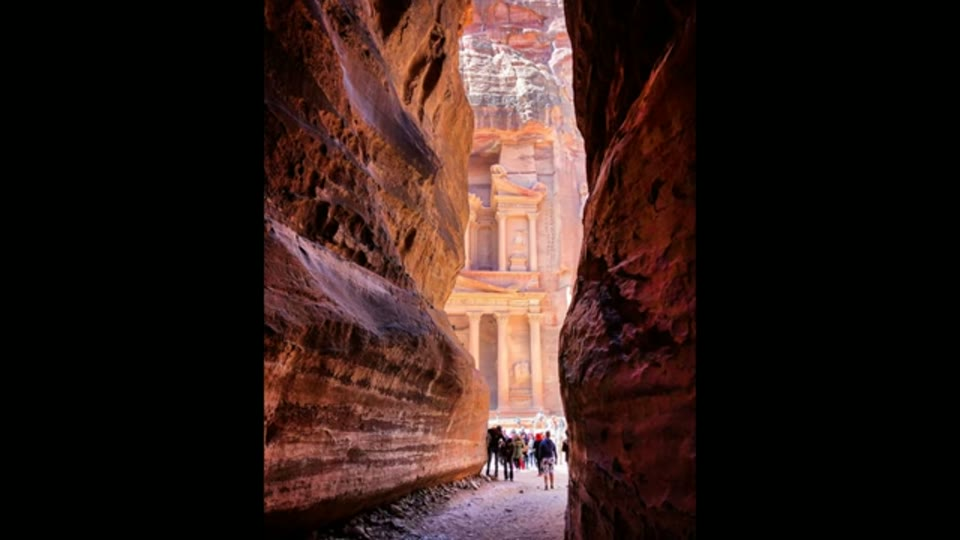
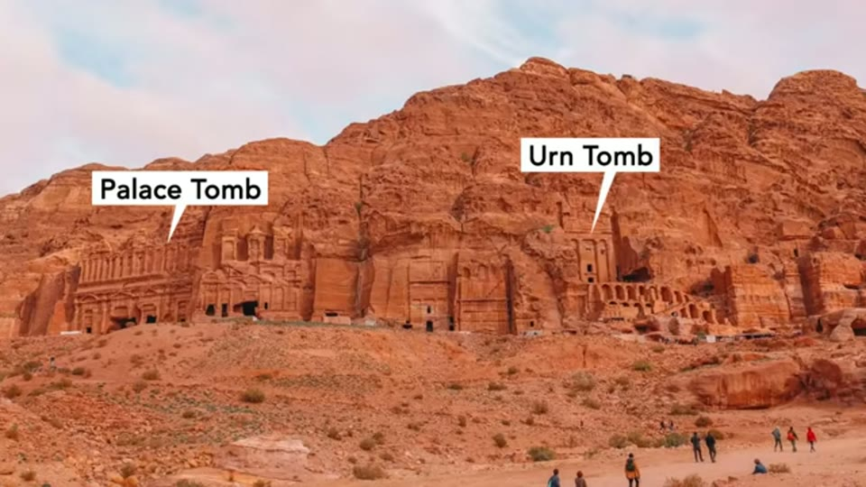

Curious Being
Petra's Lower Erosion: Caused by Flood or Not?
Tina · 18 min · watch on YouTube · summarised 2026-09-28
Look at photographs of Petra and a pattern appears: the lower portions of the facades are the most damaged, sometimes with a whole horizontal band of rock stripped away 00:06–00:26. Petra is semi-arid and mountainous and does get flash floods, so flooding is the usual explanation offered.

The pattern the video starts from: the bottom of a facade is worse than the top.
She rejects it, and the rejection is the video. "Floods are unlikely to be the main factor of this curious lower erosion... The real culprit is something or someone else."
First, the stone is not soft
Because the caves look melted, they are assumed to be cut in soft rock 01:11–01:30. She argues the appearance is misleading.
Petra has two major sandstone formations 01:30–02:26. Disi sandstone — pale grey, hard, weathering into dome shapes — runs from the visitor centre to the entrance of the Siq. Everything famous is in the other one: the Siq, the Treasury, the Street of Facades, the Royal Tombs and the Monastery are all cut into Umm Ishrin sandstone, the darker, iron-rich stone with the abstract banding that gives Petra its colour. She reports geologists finding Umm Ishrin harder and more erosion-resistant than Disi.


Petra is cut in two different sandstones, and the famous monuments are in the harder one.
The composition she gives 02:26–02:56: medium-to-coarse, well-sorted quartz up to 80%, with layers containing hematite cement up to 50%. The iron oxides are both what makes the stone red and, with the silica in the matrix, what makes it weather slowly.
From there she draws a hardness comparison 02:56–03:23: sandstones run 6–7 on the Mohs scale; Greek and Roman builders mostly used marble at 3; and given the quartz content she puts Petra's red sandstone "very close to a 7... almost as hard as granite and steel."
What she takes from that is a why question rather than a how one 03:23–04:24: harder stone is more work, needs better tools and more force, and the builders chose the hardest stone in the region anyway. Her reading is that they were building for permanence.
The flood argument, and why she thinks it fails
She sets out the flooding case fairly first 05:47–06:46. Petra sits at 820–850 m above sea level with surrounding mountains rising to about 1,400 m, in a semi-arid area she gives as receiving 45 cm / 18 inches of rain a year, mostly in winter, with sporadic heavy storms. Flash floods carved the canyons in the first place, and the Siq itself is a flood channel that began as a crack.
Then the objections.
Altitude. Petra's caves sit along cliffs at many different heights, and a great many are above the floodway 07:12–07:31. Floods might reach some low-lying caves. But the Urn Tomb and the Palace Tomb, well above any flood, still show their worst damage at the lower portions and the doorways 07:31–07:43. If they were never flooded, floods did not do it.

The worst-damaged monuments stand well above any flood.
Direction. The argument that does the most work in the fewest words 07:51–08:10. Carvings on the sides of the Siq survive with their feet intact and their upper bodies gone. Flood erosion would produce the opposite: feet stripped, torsos left.

Erosion took the upper bodies and left the feet — the opposite of what a flood does.
A detail from the wider shot of the same relief, which she does not remark on: the carvings stand behind a rope barrier with a bilingual "DO NOT TOUCH" sign planted in front of them. The site's own conservation people are acting on the mechanism the second half of the video argues for.
What the weathering research says instead
She turns to the published work on deterioration at Petra 08:16–09:49, dividing causes into intrinsic — the material — and external: wind, sunlight, climate, earthquakes, running water and human contact. Less exposed stone does better, and she gives three site examples: the Treasury is tucked into a narrow valley shielded from wind and sun and its exterior is in good condition; the Royal Tombs stand in the open and look melted; and one side of the Palace Tomb sits in the shade because of a slight setback from the Corinthian Tomb, and that shaded stonework is better preserved.
Then the result she quotes from "two groups of published researchers" 09:49–10:42, which is counterintuitive and is the most substantial thing in the video:
North-facing facades were the least weathered, while western and eastern ones showed the greatest surface recession — not the southern ones.
The explanation given is microclimate rather than total sunlight. West and east faces get both high surface moisture, from morning dew and rainfall, and half-day sun with summer surface temperatures over 50 °C, so they swing hardest between wet and dry and hot and cold. South faces get full-day sun but less moisture.
The question that survives all of it
If the orientation and exposure of a facade explain differences between monuments, they cannot explain differences within one 10:42–11:04. The top and the bottom of the same facade have taken the same sun, the same wind, the same wetting and drying. So why is the bottom worse?
Her answer: people
The human factor 11:04–13:16. Petra is one of the most visited sites in the world, and visitors touch, lean and rub. She reports that the Treasury is now closed to entry because guards, tourists and guides leaning and propping their feet against the chamber walls were producing loose sand piles at the base of those walls.
The measurement she cites is the strongest piece of evidence in the video. Geomorphologist Thomas Paradise's team monitored the Treasury's interior and found that where tour groups habitually sit had lost half a cubic metre of sandstone in a few years, with the most receded area being the part most frequently leaned on.
From there the pattern explains itself: everyone enters and leaves through doorways, guards stand at them, and entrances take the most wear in any building. The caves showing the worst damage at the doorways and lower facade are the big, famous ones that got the most visitors — in ancient times as well as modern. She adds that the lower walls may also have been used to anchor tents and other structures, noting that Bedouin tribes in the Petra area still use tents.

The damage concentrates where people pass and lean.
The water system, and what is under the sediment
The closing section turns to conservation 14:03–17:11. She argues for restoring the ancient water system — rock-cut channels, dams, cisterns and conduits that collected and diverted the annual floods — which she says broke down after a major earthquake over 1,600 years ago. The city declined, maintenance stopped, dams collapsed, conduits clogged and cisterns silted up.
Her specific proposal: there was a dam at the entrance of the Siq and a diversion channel, Wadi Muthlim, also called the little Siq. With the dam intact and the tunnel clear, floodwater would bypass the Treasury and the Street of Facades entirely. Flash floods have reached the front of the Treasury in recent years.

The ancient system had a dam at the Siq entrance and a diversion channel around it.
She also suggests the failed system changed the local microclimate — more extreme swings of temperature and humidity through the day — which would accelerate exactly the weathering described earlier. And she ends on what the sediment is hiding 16:31–17:11: the Siq and outer Siq are thickly covered with flood deposits, in places burying the original doorways of caves, so the original ground could be several metres lower than the path tourists walk. That is the argument the Treasury entry takes up in detail.
What you can check yourself
- The Siq carvings. Feet preserved, upper bodies gone. They are beside the main tourist path and are among the most photographed surfaces at Petra.
- The altitudes. That the Urn Tomb and Palace Tomb stand well above the wadi floor is visible in any photograph taken from the valley, and their doorway damage is equally visible.
- The two formations. Disi and Umm Ishrin are mapped units with published descriptions, and which monuments sit in which is a matter of record.
- Thomas Paradise's work. He has published extensively on weathering at Petra and the measurement is attributable.
- The orientation result. North least weathered, east and west worst, south in between — a published finding that anyone can look up and that runs against the intuitive answer.
- The rainfall figure. 45 cm / 18 inches a year is stated on the narration. Published figures for Petra and Wadi Musa are easy to find and worth comparing — and the figure is worth comparing against the word "semi-arid" she uses in the same sentence.
- The map. The Petra map she marks the dam on is credited on screen to F. Villeneuve and L. Nehmé, English version by Ch. Augé and I. Kehrberg, 2011, and can be consulted directly.
What the video does not settle
- No paper is named anywhere. She says "according to papers and reports, which links are in the video description" and quotes "two groups of published researchers" without titles or authors on screen. Paradise is named; nothing he wrote is.
- The Mohs comparison moves between a mineral and a rock. 7 is the hardness of quartz, the grain; marble's 3 is the hardness of calcite. A sandstone is grains plus cement, and how hard it is to carve depends on the cement as much as on the grains — which is why sandstone is conventionally regarded as a carver's stone and granite is not. The video moves from the quartz figure to "almost as hard as granite and steel" and then to the difficulty of the work without addressing the step.
- The hardness claim also sits oddly with the rest of the video, which is about how badly this stone has eroded, and which quotes research on how readily it recedes under sun, dew and a leaning shoulder.
- "Due to the extreme age of Petra's rock caves, they look somewhat melted" is said at 01:11–01:25 as a premise. The rest of the video explains the melted appearance by exposure, microclimate and contact — which does not need extreme age, and the tension is not addressed.
- The machining claim is carried over, not argued here. The "precise, uniform parallel markings" on the Urn Tomb, the Monastery's column capital and a cave at Little Petra are asserted and cross-referenced to an earlier video; no close-up comparison, scale or tool analysis appears in this one.
- The human-contact explanation is argued from plausibility plus one measurement. Paradise's half-cubic-metre figure is from the Treasury's interior, where tour groups sit. Applying it to exterior facades and to "thousands of years" of contact is an extrapolation the video does not test — and it does not address the obvious competing candidate for basal damage, which is moisture wicking up from the ground and salt crystallisation at the base of a wall.
- The earthquake is not dated or named, beyond "over 1,600 years ago."
- Nothing here dates anything. The video argues about a mechanism, not a chronology.